Nissan Skyline GT-R
Dunk Dip Eat!
 Click
Click
About
The Nissan Skyline GT-R (Japanese: 日産・スカイラインGT-R, Hepburn: Nissan Sukairain GT-R) is a Japanese sports car based on the Nissan Skyline range. The first cars named "Skyline GT-R" were produced between 1969 and 1972 under the model code KPGC10, and were successful in Japanese touring car racing events. This model was followed by a brief production run of second-generation cars, under model code KPGC110, in 1973.
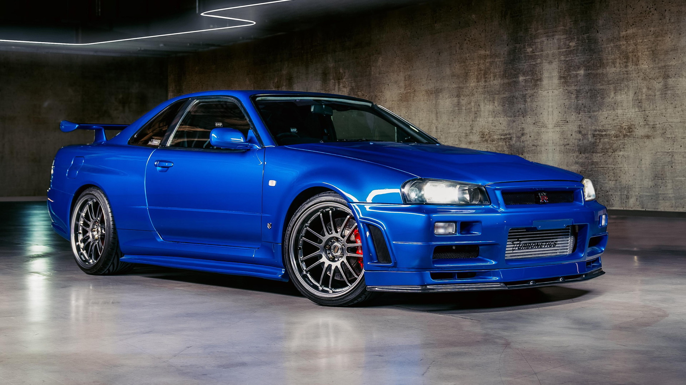
After a 16-year hiatus, the GT-R name was revived in 1989 as the BNR32 ("R32") Skyline GT-R. Group A specification versions of the R32 GT-R were used to win the Japanese Touring Car Championship for four years in a row. The R32 GT-R also had success in the Australian Touring Car Championship, with Jim Richards using it to win the championship in 1991 and Mark Skaife doing the same in 1992, until a regulation change excluded the GT-R in 1993. The technology and performance of the R32 GT-R prompted the Australian motoring publication Wheels to nickname the GT-R "Godzilla" in its July 1989 edition. Wheels then carried the name through all the generations of Skyline GT-Rs, most notably the R34 GT-R, which they nicknamed "Godzilla Returns", and described as "The best handling car we have ever driven". In tests conducted by automotive publications, R34 GT-R have covered a quarter of a mile (402 metres) in 12.2 seconds from a standing start time and accelerated from 0–100 km/h (0–62 mph) in 4.4 seconds.
The Skyline GT-R became the flagship of Nissan performance, showing many advanced technologies including the ATTESA E-TS All-wheel drive system and the Super-HICAS four-wheel steering. Today, the car is popular for import drag racing, circuit track, time attack and events hosted by tuning magazines. Production of the Skyline GT-R ended in August 2002. The car was replaced by the GT-R (R35), an all-new vehicle based on an enhanced version of the Skyline V36 platform. Although visibly different, the two vehicles share similar design features and are manufactured in the same factory.
The Skyline GT-R was never manufactured outside Japan, and the sole export markets were Hong Kong, Singapore, Australia and New Zealand, in 1991, and the UK (in 1997, due to the Single Vehicle Approval scheme). They are also popular across the world as used Japanese imports.
Despite this, the Skyline GT-R has become an iconic sports car as a grey import vehicle in the Western world (mainly the United Kingdom, Australia, New Zealand, South Africa, Ireland, Canada, and the United States). It has become notable through pop culture such as The Fast and the Furious, Initial D, Shakotan Boogie, Wangan Midnight, Need for Speed, Forza, Driving Emotion Type-S, Test Drive, and Gran Turismo. In 2019, Nismo announced that it would resume production of spare parts for all generations of the Skyline GT-R, including body panels and engines.
Go top
History of Brand
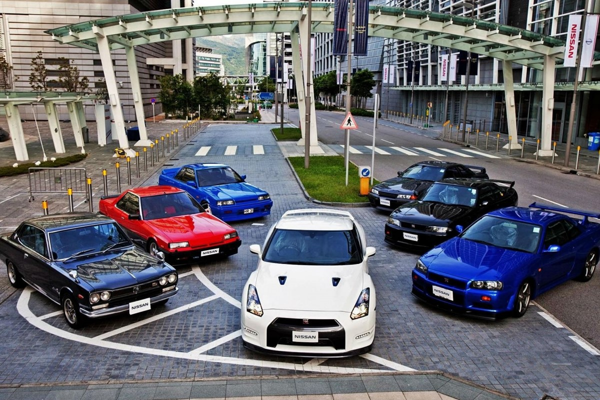
The Skyline name originated from Prince automobile company, which developed and sold the Skyline line of sedans before merging with Nissan-Datsun.
The original Skyline was launched by the Prince Motor Company in April 1957 and was powered by a 1.5-litre engine. The later iteration launched in 1964 called the Prince Skyline GT was powered by a 2.0-litre G7 inline-6 engine shared with the up market Prince Gloria sedan. Two road going versions were built. The S54A which had a single carburettor engine rated at 78 kW (106 PS; 105 hp) and the S54B which had a triple carburettor engine rated at 92 kW (125 PS; 123 hp) and production totalled 100 units
The GT-R abbreviation stands for Gran Turismo–Racing while the GT-B stands for Gran Turismo–Berlinetta. The Japanese chose to use Italian naming conventions when naming the car – as most cars that were made in Japan at that time used Western abbreviations – to further enhance sales. The earliest predecessor of the GT-R, the S54 2000 GT-B, came second in its first race in the 1964 Japanese GP to the purpose-built Porsche 904 GTS. However, the earlier Prince Skyline Sport coupé/convertible foreshadowed the GT-R as the first sports-oriented model in the Skyline range, hence the name.
The next development of the GT-R, the four-door PGC10 2000 GT-R, scored 33 victories in the one and a half years it raced, and by the time it attempted its 50th consecutive win, its run was ended by a Mazda Savanna RX-3. The car took 1,000 victories by the time it was discontinued in 1972. The last of the original GT-R models, the KPGC110 2000GT-R, used an unchanged S20 119 kW (160 hp) inline-6 engine from the earlier 2000 GT-R and only 197 units were sold due to the worldwide energy crisis. This model was the only GT-R to never participate in a major race despite being developed as a sole purpose-built race car, which now resides in Nissan's storage unit for historical cars in Zama.
The Skyline continued into the 1990s when it became popular largely because it remained rear wheel drive, while most other manufacturers were focusing on front wheel drive cars.
Throughout its lifetime, various special editions containing additional performance-enhancing modifications were introduced by Nissan and its performance division Nismo (Nissan Motorsport).
Go top
Generation
First generation (1969–1972)
The first Skyline GT-R, known by the internal Nissan designation of PGC10, was introduced on 4 February 1969, and was exclusive to Japanese Nissan dealership network called Nissan Prince Store when the Prince company was integrated into Nissan operations in 1966. It was available originally as a four-door sedan after a public debut at the October 1968 Tokyo Motor Show. It was advertised alongside the Nissan R380 racecar to showcase the Skyline's racing heraldry. It was equipped with the 2.0 L DOHC S20 Inline-six engine rated at 119 kW (162 PS; 160 hp) at 7,000 rpm and 176 N⋅m (130 lb⋅ft) at 5,600 rpm. Power was delivered to the rear wheels by a 5-speed manual transmission and the car was equipped with a limited slip differential. The first Skyline GT-R rode on a semi-trailing arm strut suspension. The braking system consisted of disc brakes at the front and drum brakes at the rear. It was available in a coupé bodystyle in March 1971 with the chassis code KPGC10.
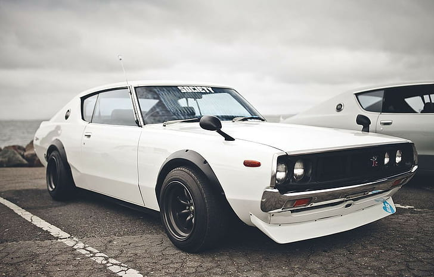
The interior of the car was very basic and featured racing bucket seats and a three-spoke steering wheel along with wood inserts. The pedals were finished in aluminium.
A popular name for the PGC and KPGC10 Skyline GT-R was Hakosuka, which combines the Japanese word for box ("hako" or ハコ) and the pronounced abbreviation of skyline ("Suka" or スカ as in スカイライン or "sukairain").
A total of 1,945 PGC and KPGC10 Skyline GT-Rs were produced.
Nissan GT-R PGC10
Nissan GT-R KPGC10 (rear view)
The 2.0-litre S20 inline-6 engine
Second generation (1972–1973)
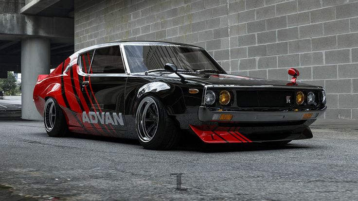
The KPGC10's successor, the KPGC110, was introduced in 1973 after its introduction at the 1972 Tokyo Motor Show. Powered by a 1,989 cc S20 inline-6 engine, the second generation of the GT-R delivered power to the rear wheels through a 5-speed manual gearbox. This car also had both front and rear disc brakes. The suspension was a semi-trailing ring arm setup and minor aerodynamic parts were added.
This model of the GT-R was also known as the Kenmeri Skyline, due to a popular advertisement featuring a young couple (Ken and Mary) enjoying the Hokkaido countryside. The advertisement later spawned a hit song by Buzz, and the tree featured in the advertisement later became a minor star itself. [citation needed]
The second generation GT-R was unsuccessful, as the 1973 oil crisis reduced demand for high-performance sports cars. A total of 197 cars were built by the end of its short production run. For the next decade, this was the last GT-R until the production of the R32 in 1989.
Third generation (1989–1994)
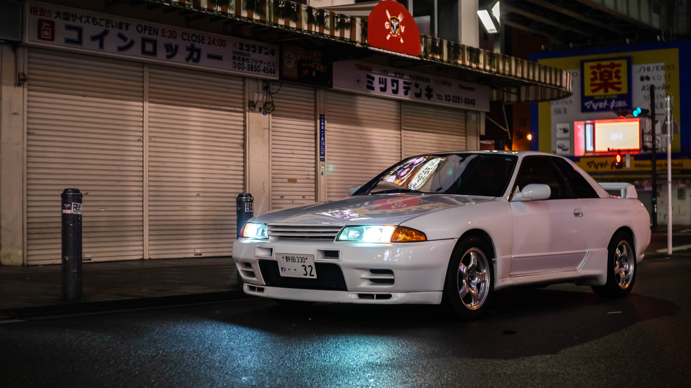
After discontinuing the Skyline GT-R in 1973, Nissan revived the GT-R nameplate again in 1989. At the time Nissan was competing in Group A Racing with the Skyline GTS-R. Nissan wanted to retire the GTS-R in favor of a more competitive vehicle. The new generation of the GT-R, E-BNR32 chassis (commonly shortened to R32), was designed to dominate Group A class racing.
Nissan Kohki (Nissan's power train engineering and manufacturing facility) originally tested a twin turbocharged 2.4 L (2,350 cc) bored and stroked version of the RB20 engine. This set up resulted in a power output of 233 kW (317 PS; 312 hp) and used a rear wheel drive drivetrain. Under Group A regulations, a turbocharged engine must multiply its engine displacement by 1.7, putting the new Skyline in the 4,000 cc class, and requiring the use of 10-inch-wide tyres. Knowing that they would be required to use 10-inch-wide tyres, Nissan decided to make the car all wheel drive. Nissan developed a special motorsport-oriented AWD system for this purpose called the ATTESA E-TS. Although this assisted with traction, it made the car 100 kg (220 lb) heavier; the added weight put the GT-R at a disadvantage to other cars in the 4,000 cc class. Nissan then made the decision to increase the displacement to 2,600 cc, and put the car in the 4,500 cc class, with the car's weight near-equal to competing cars. The 4,500 cc class also allowed for 11-inch-wide tyres. New engine block and heads were then developed to better match the increased displacement. The result was a car that had a power output of 441 kW (600 PS; 592 hp). Later REINIK (Racing & Rally Engineering Division Incorporated Nissan Kohi) produced Group A racing engines rated between 373–485 kW (507–659 PS; 500–650 hp)depending on track conditions.
This new 2,568 cc (2.6 L) RB26DETT-powered all wheel drive concept was put into production as the R32 Nissan Skyline GT-R. The R32 developed 206 kW (280 PS; 276 hp) at 6,800 rpm and 260 lb⋅ft (353 N⋅m) of torque at 4,400 rpm, it had a curb weight of 1,430 kg (3,150 lb). Nissan officially started its production run 21 August 1989, and began its Group A campaign in 1990.
The Skyline GT-R Nismo, identified by the model code suffix "RA", was introduced on 22 February 1990 and attracted a premium of ¥235,500 over the standard car. It existed to homologate a number of changes related to performance, aerodynamics, weight-saving and reliability for Group A racing. Those rules required a production run of 500 units, under the "Evolution" special regulations, but an additional 60 were produced and held by Nissan to turn into race cars, rising the production total to 560 units.[23] Aerodynamic changes include: two additional ducts in the front bumper and removal of the protective honeycomb mesh to improve airflow to the intercooler, a bonnet lip spoiler to direct more air into the engine bay, deeper rear spats, and an additional boot lip spoiler to provide more downforce. The Nismo specification deletes ABS, which is not legal in Group A, and the rear wiper to save weight. The bonnet and front panels are aluminium in all GT-R models rather than the standard steel in non GT-R models, again to save weight. Overall the GT-R Nismo weighs 1,400 kg (3,086 lb) compared to 1,430 kg (3,153 lb) for the standard GT-R. Tyres are Bridgestone RE71 in 225/55R16 fitted to 16-inch alloy wheels. Mechanically, the GT-R Nismo uses the RB26 engine of the 'standard' GT-R but replaces the standard Garrett T03 turbo chargers with larger T04B models, sacrificing the faster spool up of the ceramic turbo wheels for the enhanced reliability of steel wheels. The GT-R Nismo was only available in colour code KH2 "Gun Grey Metallic". Other minor, but noticeable, changes include a circular "Nismo" logo on the right-rear of the boot lip, lack of radio tuning controls on the dashboard console (since a radio was optional), and cross-drilled brake rotors. Nismo-branded options available included a 260 km/h (162 mph) speedometer, 3-inch cat-back exhaust system, front suspension tower brace, sports shock absorbers, 17-inch alloy wheels, and a rear spoiler with a built-in third brake light.
Skyline GT-R V·Spec II N1 in the typical Crystal White paint and with the 17-inch BBS wheels fitted to all V·Specs.
The Skyline GT-R 'N1' model (identified by the model code suffix "ZN"), was introduced on 19 July 1991, and designed for home-market N1 racing with a total of 245 units eventually produced (118 of these are 'N1', 64 are 'V·Spec N1', and 63 are 'V·Spec II N1' – see below explanation of 'V·Spec'). The most notable change was in the engine, which was upgraded to the R32-N1 specification. Building on the 'Nismo' car's specification, it was also lightened by the removal of the ABS, and rear wiper, but for 'N1' the air conditioning, sound system, and boot carpet were also deleted, and distinctive light-weight headlights were fitted. 'N1' cars also had reinforcing for the brake master cylinder and additional brake cooling ducts under the car. All 'N1' cars were delivered with a thin layer of colour code 326 "Crystal White" paint.
To celebrate the success of the GT-R in both Group N and Group A racing, Nissan introduced the Skyline GT-R V·Spec ("Victory SPECification") package on 3 February 1993. The V·Spec added Brembo brakes and a retuned ATTESA E-TS system.[24] The V·Spec was available in both 'plain' and 'N1' variants, with all V·Spec cars using the lightweight aluminium bonnet and front bumpers from the 'Nismo'. The cars also replaced the standard 16-inch wheels with 17-inch BBS wheels with 225/45R17 tyres.
Finally on 14 February 1994, the Skyline GT-R V·Spec II was introduced, with the only change being wider 245/45R17 tyres. The 'plain' V·Spec and V·Spec II had a curb weight of 1,480 kg (3,263 lb), weighing 50 kg (110 lb) more than the standard GT-R. Total production of the V·Spec and V·Spec II was 1,396 and 1,306 units respectively.
Production of the R32 Skyline GT-R ceased in November 1994 after a production run of 43,937 units.
The most popular colours are KH2 "Gun Grey Metallic" (45% of cars), followed by 326 "Crystal White" (18%), 732 "Black Pearl Metallic" (13%), KL0 "Spark Silver Metallic" (12%). The rarest colour is BL0 "Greyish Blue Pearl" with only 141 units.
In 1989, the Japanese Best Motoring television program conducted a test at the Nürburgring Nordschleife with a production version Nissan Skyline GT-R R32. Driven by Motoharu Kurosawa, the car completed a lap time of a 8:22.38 minutes around the semi-wet (damp) condition circuit, making it the fastest production vehicle around the track.
As of August 2014, the first R32 Skyline GT-Rs became eligible for US import under the NHTSA "25 year" rule that allows vehicles that are 25 years old (to the month) or older to be imported. Due to their age, these vehicles do not have to comply with federal emissions or with federal motor vehicle safety standards.
The R32 Zero-R was a special tuner edition which was engineered by HKS with 441 kW (591 hp; 600 PS). 10 were made but only 4 remain in existence. One was bought by the Sultan of Brunei. One of them was bought at the 2019 Tokyo Auto Salon for A$212,000 and sent to Australia.
Fourth generation (1995–1998)
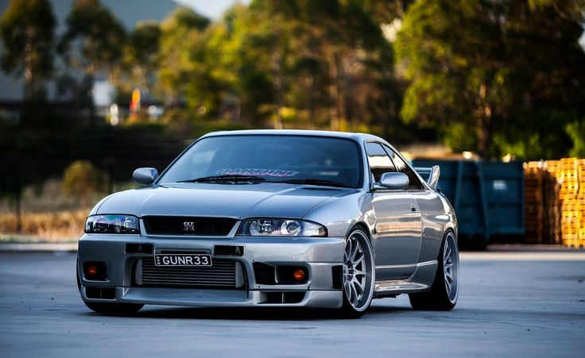
The E-BCNR33 (R33) was developed even as the non GT-R R33 models went on sale in August 1993 (with a prototype being shown at the 1993 Tokyo Motor Show) for release in 1995 as a successor to the R32 model. The engine in the R33 was nearly identical to the R32. It used the same turbochargers and the same specification for the manual gearbox, although the syncros were stronger. The engine corrected the R32's weak oil pump drive collar, which tended to fail in higher power applications, by using a wider collar (also fixed in spec 2 R32's prior to R33 release). The base model of the R33 GT-R weighs 1,540 kg (3,395 lb).
The R33 GT-R went on sale on 6 January 1995 with the base model GT-R and the V·Spec model. The V·Spec model weighed in 10 kg (22 lb) heavier, and had sportier suspension resulting in lower ground clearance. The V·Spec also featured the newer ATTESA E-TS Pro all wheel drive system, which included an Active Limited Slip differential.
At the same time as the introduction of the R33 GT-R and GT-R V·Spec, Nissan introduced the R33 GT-R V·Spec N1 model. Changes made to the R33 N1 are similar to those in the R32 N1. The car was made lighter by removing the ABS, air conditioning, sound system, rear wiper, and boot carpet. The R33 GT-R V·Spec N1 received the slightly revised R33 N1 engine.
The R33 ended production on 9 November 1998. The last R33 GT-R produced was a V-Spec in GV1 finished in Black Pearl colour.
Before the official release of the R33, Nissan recorded a lap time for the R33 GT-R at the Nürburgring Nordschleife, driven by Dirk Schoysman, car set a lap time of 7:59.887 minutes, became the first production vehicle to break into the sub 8 minute mark. Also the, fastest production vehicle around the track. In 1999, the record was broken by a Skyline GT-R R34.
In 1995, Best Motoring conducted a test of the GT-R R33 at the Nürburgring Nordschleife. Driven by Motoharu Kurosawa, the car set a 8:01.72 minute lap time around the track.
Fifth generation (1999–2002)
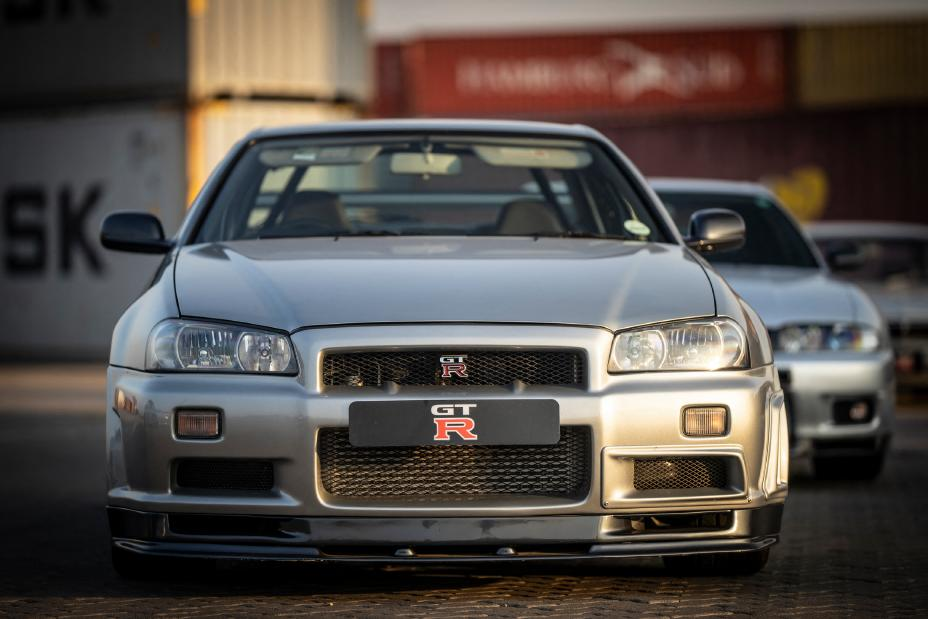
The GF-BNR34 (R34) Skyline GT-R, GT-R V·Spec and GT-R V·Spec N1 models were introduced in January 1999. The R34 GT-R was shorter (from front to rear), and the front overhang was reduced as compared to its predecessor. The valve covers were painted glossy red (colour code Cherry Red Effect Z24 or X1020)[citation needed], as opposed to black in previous models.
A new feature on the R34 GT-R is a 5.8" LCD multifunction display on the centre of the dashboard, which shows seven different live readings of engine and vehicle statistics such as turbocharger pressure (1.2 bar max), oil and water temperature, among others. The GT-R V·Spec model added two extra features to the display: intake and exhaust gas temperatures. Nismo Multi-function Displays (MFD) could be bought at an extra cost, they included a lap timer, G-Force meter and an increase in boost pressure measurement to 2 bar. The R34 GT-R was made shorter in response to customer concerns who thought the R33 was too bulky.
Like the R33, the new R34 GT-R V·Spec (Victory Specification) models come equipped with the ATTESA E-TS Pro system and an Active LSD at the rear, while standard GT-R models come with the non-Pro system and a conventional mechanical differential. The V·Spec model also had firmer suspension and lower ground clearance, thanks to front and side splitters, as well as a rear carbon fibre air diffuser, designed to keep air flowing smoothly under the car.
At the time of the R34's introduction, like the R32 and R33, Nissan introduced an R34 V·Spec N1 model. The R34 V·Spec N1 was equipped similar to the R32 and R33 N1 models – a homologation special. It was sold without air conditioning, audio equipment, rear wiper, or boot lining, but ABS remained. The new R34 N1 was also given the new R34 N1 engine. Only 38 known R34 V·Spec N1 models were produced from the factory, 12 of which Nismo used for Super Taikyu racing. The rest were sold to various customers, mostly racing teams and tuning garages.[citation needed]
The V·Spec version was also imported into the UK with a number of modifications carried out on these 80 cars. These included 3 additional oil coolers, revised ECU map, full Connolly leather interior, underbody diffusers, stiffer suspension, active rear limited slip differential, extra display feature on the in car display. In additional to the UK, 10 were sold to Hong Kong and Singapore, and 5 to New Zealand although with different changes for their respective markets.
In October 2000, Nissan introduced the V·Spec II, replacing the V·Spec. The V·Spec II has increased stiffness in the suspension (even stiffer than the original V·Spec) and had larger rear brake rotors. It also comes equipped with a carbon fibre bonnet equipped with a NACA duct, which is lighter than the aluminium that all other GT-R bonnets are made from. Also different on the V·Spec II was an iridium centre console and aluminium pedals. The seats were upholstered with black cloth rather than the grey cloth used on previous R34 GT-R models, and the amber turn lenses were replaced with white versions.
With the exception of the carbon fibre bonnet, the standard trim level GT-R also received these updates. A total of 18 V·Spec II N1 were built. A total of 1855[61] V·Spec II were built for Japan, with an additional 2 being sold for the New Zealand market. The V·Spec N1 was replaced with the V·Spec II N1. The same changes applied to the V·Spec N1 were applied to the V·Spec II N1, with the exception of the V·Spec II carbon bonnet which was now unpainted.
In May 2001, the M·Spec was introduced. It was based on the V-Spec II, but had special "Ripple control" dampers, revised suspension set up, stiffer rear sway bar and a leather interior with heated front seats. The 'M' on the M·Spec stood for Mizuno who is the chief engineer of Nissan. The only other change was the removal of the carbon fibre bonnet which was replaced with the standard aluminium bonnet.
In February 2002, Nissan launched a final production model of the R34 GT-R called the Skyline GT-R V·Spec II Nür and the Skyline GT-R M·Spec Nür, which were based on the V-Spec II N1. The Nür was named after the famous German Nürburgring racetrack, where the Skyline was developed.
In total, 1,003 units of the R34 GT-R Nür were produced. 718 were V·Spec II Nürs and 285 were M·Spec Nürs. The Nür model featured an improved RB26DETT based on the N1 racing engine. The standard turbochargers were upgraded to larger versions with a slight increase in boost and the ceramic blades were replaced with steel versions. This has increased lag, but the turbo's durability was improved while being able to handle a bigger boost increase. The V·Spec II Nür is based on the regular V·Spec II model, and the M·Spec Nür was based on the regular M·Spec model.
Other than the addition of the Nür engine, the Nür models also included a different colour of stitching on the interior trim, as well as a speedometer reading up to 300 km/h (186 mph), gold valve covers instead of red and a gold VIN plate instead of silver. Due to Japanese car industry norms at the time, the car was advertised as having 206 kW (280 PS; 276 hp) but it actually had over 246 kW (334 PS; 330 hp) when it left the factory.
In 1999, during Nissan's testing session at the Nürburgring Nordscheleife. The car set a unofficial lap time of 7:52 minutes around the track, driven by Nissan's test driver Kazuo Shimizu. The car broke the Skyline GT-R R33's record, which was the fastest production vehicle around the track.
Nissan Gtr
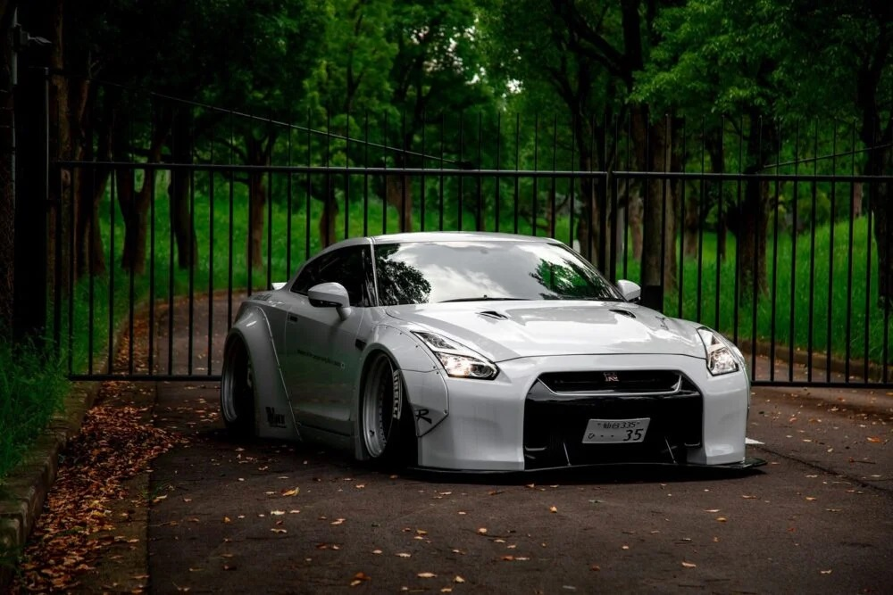
The Nissan GT-R (Gran Turismo–Racing; model code: R35; Japanese: 日産・GT-R; Nissan GT-R) is a car built by Japanese marque Nissan since 2007. It has a 2+2 seating layout and is considered both a sports car and a grand tourer. The engine is front-mid mounted and drives all four wheels. It succeeds the Nissan Skyline GT-R, a faster variant of the Nissan Skyline. Although this model was the sixth-generation to bear the GT-R name, it is no longer part of the Skyline line-up. The car is built on the PM platform, derived from the FM platform used in the Skyline and Nissan Z models. Production is conducted in a shared production line at Nissan's Tochigi plant in Japan.
As per Nissan's intention of creating a world beating sports car, the GT-R brand was revived as part of the Nissan Revival Plan. Overall development began in 2000, following seven years of development and testing, including the introduction of two concept models in 2001 and 2005. The production version of the GT-R was unveiled at the 2007 Tokyo Motor Show. The GT-R is a brand-new car built on the PM platform, and featured innovative concepts and technologies, such as advanced aerodynamics, the VR38DETT engine, an active suspension system and the ATTESA E-TS Pro all-wheel-drive system, making it the first ever rear mounted independent transaxle all-wheel-drive vehicle. It is one of the first production cars to feature launch control and a dual-clutch transmission as well. The overall body is made out of steel, aluminium and carbon-fibre. In 2009 it set a record for the fastest accelerating 4-seater production car.
The GT-R is offered worldwide, unlike its predecessors which were sold in a limited number of markets. It received various facelifts and updates to be up to date with the competition, and several special editions were also offered during its prolonged production span. The car is used in motorsports, notably winning championships in the FIA GT1 World Championship, Super GT and in various GT3 racing series, including the GT World Challenge. It is well received among enthusiasts and automotive publications as well, British motor magazine Top Gear named it as "one of the most incredible cars of any kind ever built", due its exceptional performance and practicality given at an affordable price. Despite being one of the fastest production cars, it has won numerous notable accolades such as the World Performance Car of The Year among many others.
Sales in the Australian market were ceased due to new side impact regulations. In the European market, including the United Kingdom were similarly suspended, due to newly implemented noise regulations. Currently, the car is primarily available in North America, Japan, and some markets.
Go top
Powertrain
 The GT-R of the 1990s included a 2.6 L straight six-cylinder twin-turbo engine producing 206 kW (280 PS; 276 hp). The standard turbochargers were of a hybrid steel/ceramic design allowing them to spool up faster due to the light nature of the ceramic exhaust wheel.
The drive train delivered power to all four wheels using an electronically controlled all-wheel-drive system Nissan called the ATTESA E-TS. This system used two accelerometers mounted under the center console, which fed lateral and longitudinal inputs to the ECU. The ECU then controlled power delivery to the front wheels via an electronic torque split converter. In 1995, the ATTESA E-TS Pro was introduced as an option for R33 GT-R customers, and came as standard equipment in GT-R V•Spec models. It was later standard equipment in all GT-R models for the R34 Skyline GT-R. The ATTESA E-TS Pro added a hydraulic Active Limited Slip Differential, which was controlled by the onboard ATTESA computer. This was only for the rear differential, as the front differential remained as a mechanical open differential. Although it is not related to the all wheel drive system, it uses much of the same sensors, and the same computer. The R32 could be switched from AWD to RWD by removing the 4WD fuse, but R33 and R34 models had to have the front tailshaft removed, or the centre diff can be depressurised for 'towing mode' as specified in the owners manual.
The car also had computer-controlled all wheel steering system referred to as HICAS. The HICAS system activated when the vehicle exceeded 80 km/h (50 mph) and controlled the steering of the rear wheels in the same direction as the front to improve turn in on entry to corners. This feature is often seen as more of a hindrance than help in race applications.[citation needed] The system tends to favor less experienced drivers, and can make the rear suspension unstable during high speed cornering.
While the published figures from Nissan were as quoted above, tests showed the car had a factory power output of closer to 327 hp (332 PS; 244 kW) at the flywheel. The lower published figure was Nissan's response to the need to abide by a gentleman's agreement between the Japanese auto manufacturers not to introduce a car to the public exceeding 206 kW (280 PS; 276 hp) of power output.
The GT-R of the 1990s included a 2.6 L straight six-cylinder twin-turbo engine producing 206 kW (280 PS; 276 hp). The standard turbochargers were of a hybrid steel/ceramic design allowing them to spool up faster due to the light nature of the ceramic exhaust wheel.
The drive train delivered power to all four wheels using an electronically controlled all-wheel-drive system Nissan called the ATTESA E-TS. This system used two accelerometers mounted under the center console, which fed lateral and longitudinal inputs to the ECU. The ECU then controlled power delivery to the front wheels via an electronic torque split converter. In 1995, the ATTESA E-TS Pro was introduced as an option for R33 GT-R customers, and came as standard equipment in GT-R V•Spec models. It was later standard equipment in all GT-R models for the R34 Skyline GT-R. The ATTESA E-TS Pro added a hydraulic Active Limited Slip Differential, which was controlled by the onboard ATTESA computer. This was only for the rear differential, as the front differential remained as a mechanical open differential. Although it is not related to the all wheel drive system, it uses much of the same sensors, and the same computer. The R32 could be switched from AWD to RWD by removing the 4WD fuse, but R33 and R34 models had to have the front tailshaft removed, or the centre diff can be depressurised for 'towing mode' as specified in the owners manual.
The car also had computer-controlled all wheel steering system referred to as HICAS. The HICAS system activated when the vehicle exceeded 80 km/h (50 mph) and controlled the steering of the rear wheels in the same direction as the front to improve turn in on entry to corners. This feature is often seen as more of a hindrance than help in race applications.[citation needed] The system tends to favor less experienced drivers, and can make the rear suspension unstable during high speed cornering.
While the published figures from Nissan were as quoted above, tests showed the car had a factory power output of closer to 327 hp (332 PS; 244 kW) at the flywheel. The lower published figure was Nissan's response to the need to abide by a gentleman's agreement between the Japanese auto manufacturers not to introduce a car to the public exceeding 206 kW (280 PS; 276 hp) of power output.
Motor Sport
The GT-R's history of racetrack dominance began with its 50 victories scored from 1968 to 1972, including 49 consecutive wins in the Japanese race circuit. Nissan pulled out of racing shortly after the introduction of the KPGC110 due to the 1973 oil crisis.
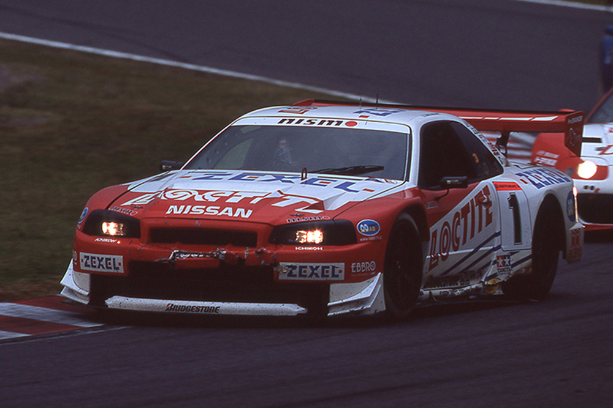
The Skyline GT-R later earned the nickname "Godzilla", as a play on its "monster" track performance and country of origin. The R32 GT-R dominated the Japanese Touring Car Championship, won all 29 races it entered in the series, as well as taking the series title every year from 1989 to 1993.
It took 50 races from 50 starts from 1991 to 1997 (latterly R33) in the N1 Super Taikyu. The GT-R's success sounded the death knell of Group A Touring Car racing; with the formula being scrapped soon after. JTCC was similarly dominated by the R32 GT-R, and splintered soon after, leading to the switch to the Supertouring category and also indirectly to the GT500 category of today.
The GT-R's success in motor racing was formidable, particularly in the annual 1,000 km (620 miles) race at the Mount Panorama circuit in Bathurst, Australia, where the winner in 1991 and 1992 was a GT-R (despite receiving additional 140 kg (309 lb) in weight penalties and a turbo pressure relief valve in 1992, and crashing). It took the overall win of the 1991 Spa 24 Hours, after getting the pole position and fastest lap time, ahead of the Porsche 911 and BMW M3 Evolution.[81] It remained dominant in the Japanese GT series for many years. The Skyline GT-R was retired from the JGTC series (later changed Super GT Series) in 2004. Its successor, the Nissan GT-R, competed and dominated the 2008 Super GT season, winning the GT500 (see details below).
 No other GT-R race victories escaped controversy.[citation needed] At the 1990 Macau Grand Prix Guia touring car race, the factory-backed R32, driven by Masahiro Hasemi, led the race from start to finish. The following year, officials forced the car to carry a weight penalty of 140 kg (309 lb).[citation needed] That year, it was also up against the more competitive DTM BMW M3 and Mercedes-Benz 190E 2.5–16 Evolution II. A disgruntled Hasemi took fourth place. For the following and final year, the weight penalty was reduced, and works-backed Hasemi returned with another privateer R32. The privateer crashed, and Hasemi retired with engine failure.
In the UK, Andy Middlehurst took the Nissan Skyline GT-R (R32) to two consecutive championship wins in the National Saloon Car Cup. Other championship titles include the 1991 Australian Touring Car Championship (Jim Richards), the 1991 Australian Endurance Championship (Mark Gibbs & Rowan Onslow), the 1991 Australian Manufacturers' Championship, the 1992 Australian Touring Car Championship (Mark Skaife) and the 1992 Spanish Touring Car Championship.
Janspeed provided three cars to race in Europe. One car to run for Andy Middlehurst in the UK in the National Touring Car Series. In 1990 they entered three cars in the SPA-Francorchamps 24 hours. They managed a tremendous finish of one, two and three in class. Three cars were entered to run in the SPA 24 hours in which it finished first and second in its class (Group N) in 1991. A GT-R Group A car also took first overall. In 1992 they finished second in Group N with the Group A entry retiring due to a pit fire.
Janspeed also ran a GT-R in the Spanish Touring Car Championship (CET). This car won the championship driven by Luis Pérez-Sala.[82]
Akira Kameyama has taken the GT-R to the Pikes Peak International Hillclimb race on three occasion winning in each Open Class for production cars he entered, one in 1993 with the R32,[83] another in 1996 with the R33[84] and again in 1998.[85] For the following year, Rhys Millen took an R33 Skyline GT-R to win the High-Performance Showroom Stock category.
The GT-R debuted in the US at 1994 Rolex 24 Hours of Daytona. Nismo entered a sole Group A specification R32 for the GTU category. This car was so fast in the infield section in the first practice that the competition colluded to have restrictors fitted. The team was not allowed to run again until they fitted them. They eventually finished 20th. NISSAN was probably not too upset as they did not import the GT-R model to the USA. However, they did sell the 300ZX and it was one of those that won.
No other GT-R race victories escaped controversy.[citation needed] At the 1990 Macau Grand Prix Guia touring car race, the factory-backed R32, driven by Masahiro Hasemi, led the race from start to finish. The following year, officials forced the car to carry a weight penalty of 140 kg (309 lb).[citation needed] That year, it was also up against the more competitive DTM BMW M3 and Mercedes-Benz 190E 2.5–16 Evolution II. A disgruntled Hasemi took fourth place. For the following and final year, the weight penalty was reduced, and works-backed Hasemi returned with another privateer R32. The privateer crashed, and Hasemi retired with engine failure.
In the UK, Andy Middlehurst took the Nissan Skyline GT-R (R32) to two consecutive championship wins in the National Saloon Car Cup. Other championship titles include the 1991 Australian Touring Car Championship (Jim Richards), the 1991 Australian Endurance Championship (Mark Gibbs & Rowan Onslow), the 1991 Australian Manufacturers' Championship, the 1992 Australian Touring Car Championship (Mark Skaife) and the 1992 Spanish Touring Car Championship.
Janspeed provided three cars to race in Europe. One car to run for Andy Middlehurst in the UK in the National Touring Car Series. In 1990 they entered three cars in the SPA-Francorchamps 24 hours. They managed a tremendous finish of one, two and three in class. Three cars were entered to run in the SPA 24 hours in which it finished first and second in its class (Group N) in 1991. A GT-R Group A car also took first overall. In 1992 they finished second in Group N with the Group A entry retiring due to a pit fire.
Janspeed also ran a GT-R in the Spanish Touring Car Championship (CET). This car won the championship driven by Luis Pérez-Sala.[82]
Akira Kameyama has taken the GT-R to the Pikes Peak International Hillclimb race on three occasion winning in each Open Class for production cars he entered, one in 1993 with the R32,[83] another in 1996 with the R33[84] and again in 1998.[85] For the following year, Rhys Millen took an R33 Skyline GT-R to win the High-Performance Showroom Stock category.
The GT-R debuted in the US at 1994 Rolex 24 Hours of Daytona. Nismo entered a sole Group A specification R32 for the GTU category. This car was so fast in the infield section in the first practice that the competition colluded to have restrictors fitted. The team was not allowed to run again until they fitted them. They eventually finished 20th. NISSAN was probably not too upset as they did not import the GT-R model to the USA. However, they did sell the 300ZX and it was one of those that won.
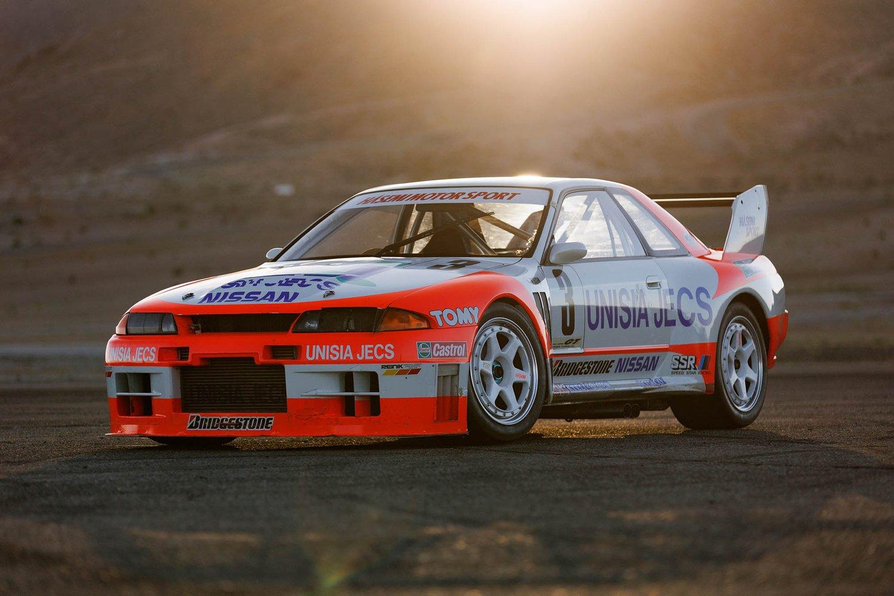
In 1995 Nismo developed the Skyline GT-R for endurance racing with a pair of JGTC specification R33s for the 24 Hours of Le Mans. These were not allowed to run a four-wheel drive. To meet homologation regulations, Nissan had to build at least one street-legal version with four-wheel drive removed. The two racing cars achieved some success at Le Mans, with one car placing tenth overall, and fifth in its GT1 class, class—beaten only by the more developed McLaren F1 GTRs and in overall standings by the GT2 class champion No. 84 Honda NSX entered by Team Kunimitsu. For 1996, the Skyline GT-R LMs returned, this time carrying enlarged RB26DETTs displacing 2.8 litres. Again competing in GT1, they finished 15th overall and 10th in class. However, Nissan chose to abandon their production-based Skyline GT-R LMs in 1997 and instead turn to the purpose-built R390 GT1. In honour of the success of the Skyline at Le Mans, Nissan marketed a limited edition R33 they called the LM Limited, available only in "Champion Blue" (colour code BT2).[86]
In 2006 Automotive Forums.com became the first team to compete with an R34 GT-R in the United States, participating in the Speed World Challenge GT series. Team: Driver and President of Automotive Forums.com Igor Sushko, Crew Chief Sean Morris, Team Manager Victor Reyes, Mechanic Josh Mitchell, and Engineer Merritt Johnson.
In 2007, the Heat Treatments Drag R32 Skyline GT-R driven by Reece McGregor of New Zealand, broke the world record for the fastest AWD over 400 m (1⁄4 mile) with a time of 7.57 seconds at 305.98 km/h (190.13 mph) at the Willowbank Dragway in Australia, a record previously held by the HKS R33 Skyline GT-R with a time of 7.67 seconds.[87][88] Heat Treatments R32 has gone as quick as 7.53@185 mph.[89]
On the same year at TOTB U.K Racing series, Keith Cowie and RB Motorsport's GT-R BNR32 broke the fastest four-wheel drive 0–300 km/h (0–186 mph) record with a time of 12.47 seconds. The previous record holder was another GT-R, a BNR32 from Veilside Japan with 13.72 seconds during the early 90s.[90]
In March 2015, the New Zealand tuning shop, R.I.P.S., set a new AWD 400 m (1⁄4 mile) record with their BNR32 "RIPS MGAWOT III". It ran 7.32 seconds at 308.91 km/h (191.95 mph).[91]
In July 2020, Australian tuning company, Maatuoks Racing's R32 GT-R broke the AWD quarter mile record. Car itself ran the quarter mile in 6.47 at 353.88 km/h (219.94 mph). Also became the fastest GT-R at the quarter mile by beating the ET-S R35 GT-R.[92]
Go top
Click
About
The Nissan Skyline GT-R (Japanese: 日産・スカイラインGT-R, Hepburn: Nissan Sukairain GT-R) is a Japanese sports car based on the Nissan Skyline range. The first cars named "Skyline GT-R" were produced between 1969 and 1972 under the model code KPGC10, and were successful in Japanese touring car racing events. This model was followed by a brief production run of second-generation cars, under model code KPGC110, in 1973. 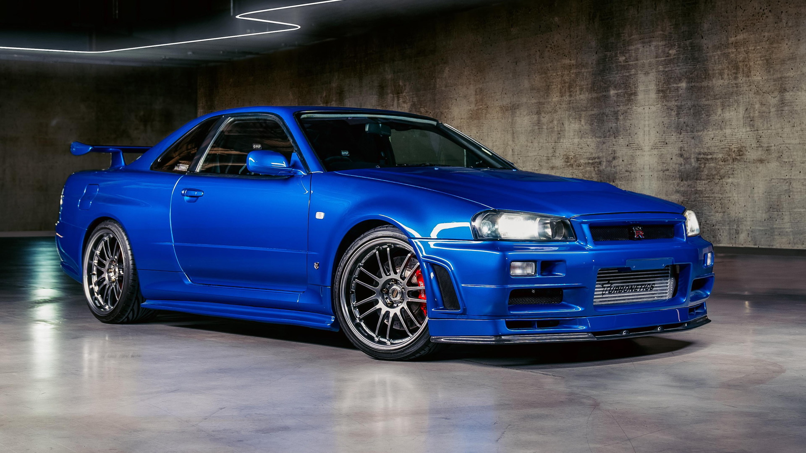 After a 16-year hiatus, the GT-R name was revived in 1989 as the BNR32 ("R32") Skyline GT-R. Group A specification versions of the R32 GT-R were used to win the Japanese Touring Car Championship for four years in a row. The R32 GT-R also had success in the Australian Touring Car Championship, with Jim Richards using it to win the championship in 1991 and Mark Skaife doing the same in 1992, until a regulation change excluded the GT-R in 1993. The technology and performance of the R32 GT-R prompted the Australian motoring publication Wheels to nickname the GT-R "Godzilla" in its July 1989 edition. Wheels then carried the name through all the generations of Skyline GT-Rs, most notably the R34 GT-R, which they nicknamed "Godzilla Returns", and described as "The best handling car we have ever driven". In tests conducted by automotive publications, R34 GT-R have covered a quarter of a mile (402 metres) in 12.2 seconds from a standing start time and accelerated from 0–100 km/h (0–62 mph) in 4.4 seconds. The Skyline GT-R became the flagship of Nissan performance, showing many advanced technologies including the ATTESA E-TS All-wheel drive system and the Super-HICAS four-wheel steering. Today, the car is popular for import drag racing, circuit track, time attack and events hosted by tuning magazines. Production of the Skyline GT-R ended in August 2002. The car was replaced by the GT-R (R35), an all-new vehicle based on an enhanced version of the Skyline V36 platform. Although visibly different, the two vehicles share similar design features and are manufactured in the same factory. The Skyline GT-R was never manufactured outside Japan, and the sole export markets were Hong Kong, Singapore, Australia and New Zealand, in 1991, and the UK (in 1997, due to the Single Vehicle Approval scheme). They are also popular across the world as used Japanese imports. Despite this, the Skyline GT-R has become an iconic sports car as a grey import vehicle in the Western world (mainly the United Kingdom, Australia, New Zealand, South Africa, Ireland, Canada, and the United States). It has become notable through pop culture such as The Fast and the Furious, Initial D, Shakotan Boogie, Wangan Midnight, Need for Speed, Forza, Driving Emotion Type-S, Test Drive, and Gran Turismo. In 2019, Nismo announced that it would resume production of spare parts for all generations of the Skyline GT-R, including body panels and engines.
Go top
History of Brand
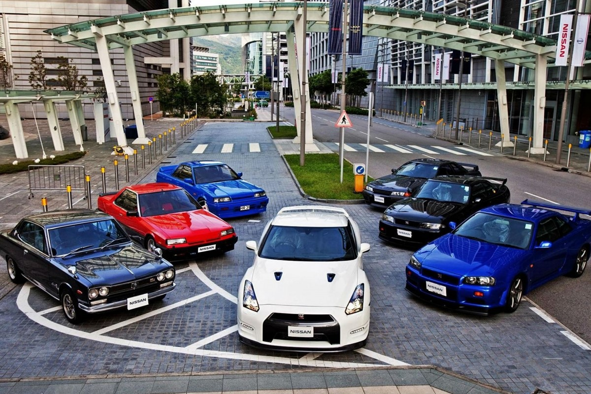 The Skyline name originated from Prince automobile company, which developed and sold the Skyline line of sedans before merging with Nissan-Datsun. The original Skyline was launched by the Prince Motor Company in April 1957 and was powered by a 1.5-litre engine. The later iteration launched in 1964 called the Prince Skyline GT was powered by a 2.0-litre G7 inline-6 engine shared with the up market Prince Gloria sedan. Two road going versions were built. The S54A which had a single carburettor engine rated at 78 kW (106 PS; 105 hp) and the S54B which had a triple carburettor engine rated at 92 kW (125 PS; 123 hp) and production totalled 100 units The GT-R abbreviation stands for Gran Turismo–Racing while the GT-B stands for Gran Turismo–Berlinetta. The Japanese chose to use Italian naming conventions when naming the car – as most cars that were made in Japan at that time used Western abbreviations – to further enhance sales. The earliest predecessor of the GT-R, the S54 2000 GT-B, came second in its first race in the 1964 Japanese GP to the purpose-built Porsche 904 GTS. However, the earlier Prince Skyline Sport coupé/convertible foreshadowed the GT-R as the first sports-oriented model in the Skyline range, hence the name. The next development of the GT-R, the four-door PGC10 2000 GT-R, scored 33 victories in the one and a half years it raced, and by the time it attempted its 50th consecutive win, its run was ended by a Mazda Savanna RX-3. The car took 1,000 victories by the time it was discontinued in 1972. The last of the original GT-R models, the KPGC110 2000GT-R, used an unchanged S20 119 kW (160 hp) inline-6 engine from the earlier 2000 GT-R and only 197 units were sold due to the worldwide energy crisis. This model was the only GT-R to never participate in a major race despite being developed as a sole purpose-built race car, which now resides in Nissan's storage unit for historical cars in Zama. The Skyline continued into the 1990s when it became popular largely because it remained rear wheel drive, while most other manufacturers were focusing on front wheel drive cars. Throughout its lifetime, various special editions containing additional performance-enhancing modifications were introduced by Nissan and its performance division Nismo (Nissan Motorsport).
Go top
Generation
First generation (1969–1972)
The first Skyline GT-R, known by the internal Nissan designation of PGC10, was introduced on 4 February 1969, and was exclusive to Japanese Nissan dealership network called Nissan Prince Store when the Prince company was integrated into Nissan operations in 1966. It was available originally as a four-door sedan after a public debut at the October 1968 Tokyo Motor Show. It was advertised alongside the Nissan R380 racecar to showcase the Skyline's racing heraldry. It was equipped with the 2.0 L DOHC S20 Inline-six engine rated at 119 kW (162 PS; 160 hp) at 7,000 rpm and 176 N⋅m (130 lb⋅ft) at 5,600 rpm. Power was delivered to the rear wheels by a 5-speed manual transmission and the car was equipped with a limited slip differential. The first Skyline GT-R rode on a semi-trailing arm strut suspension. The braking system consisted of disc brakes at the front and drum brakes at the rear. It was available in a coupé bodystyle in March 1971 with the chassis code KPGC10. 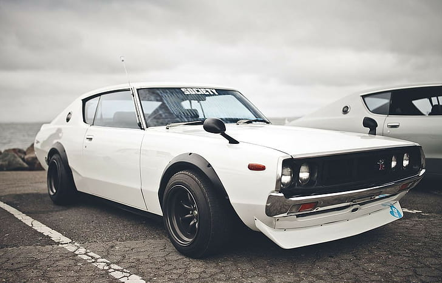 The interior of the car was very basic and featured racing bucket seats and a three-spoke steering wheel along with wood inserts. The pedals were finished in aluminium. A popular name for the PGC and KPGC10 Skyline GT-R was Hakosuka, which combines the Japanese word for box ("hako" or ハコ) and the pronounced abbreviation of skyline ("Suka" or スカ as in スカイライン or "sukairain"). A total of 1,945 PGC and KPGC10 Skyline GT-Rs were produced. Nissan GT-R PGC10 Nissan GT-R KPGC10 (rear view) The 2.0-litre S20 inline-6 engine
Second generation (1972–1973)
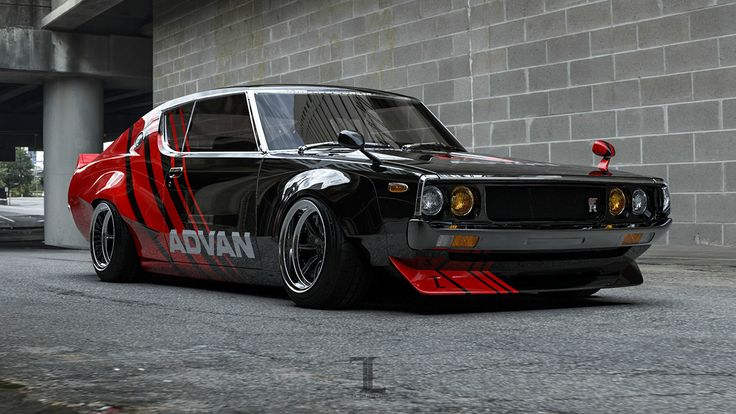 The KPGC10's successor, the KPGC110, was introduced in 1973 after its introduction at the 1972 Tokyo Motor Show. Powered by a 1,989 cc S20 inline-6 engine, the second generation of the GT-R delivered power to the rear wheels through a 5-speed manual gearbox. This car also had both front and rear disc brakes. The suspension was a semi-trailing ring arm setup and minor aerodynamic parts were added. This model of the GT-R was also known as the Kenmeri Skyline, due to a popular advertisement featuring a young couple (Ken and Mary) enjoying the Hokkaido countryside. The advertisement later spawned a hit song by Buzz, and the tree featured in the advertisement later became a minor star itself. [citation needed] The second generation GT-R was unsuccessful, as the 1973 oil crisis reduced demand for high-performance sports cars. A total of 197 cars were built by the end of its short production run. For the next decade, this was the last GT-R until the production of the R32 in 1989.
Third generation (1989–1994)
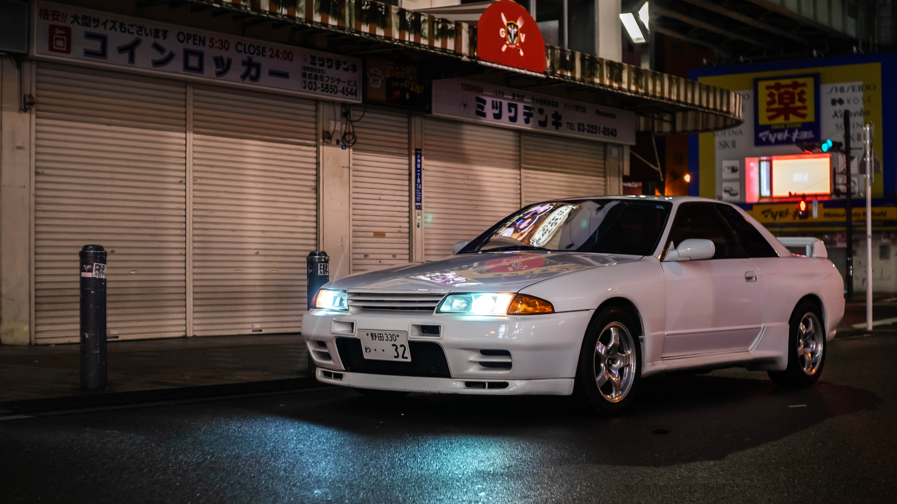 After discontinuing the Skyline GT-R in 1973, Nissan revived the GT-R nameplate again in 1989. At the time Nissan was competing in Group A Racing with the Skyline GTS-R. Nissan wanted to retire the GTS-R in favor of a more competitive vehicle. The new generation of the GT-R, E-BNR32 chassis (commonly shortened to R32), was designed to dominate Group A class racing. Nissan Kohki (Nissan's power train engineering and manufacturing facility) originally tested a twin turbocharged 2.4 L (2,350 cc) bored and stroked version of the RB20 engine. This set up resulted in a power output of 233 kW (317 PS; 312 hp) and used a rear wheel drive drivetrain. Under Group A regulations, a turbocharged engine must multiply its engine displacement by 1.7, putting the new Skyline in the 4,000 cc class, and requiring the use of 10-inch-wide tyres. Knowing that they would be required to use 10-inch-wide tyres, Nissan decided to make the car all wheel drive. Nissan developed a special motorsport-oriented AWD system for this purpose called the ATTESA E-TS. Although this assisted with traction, it made the car 100 kg (220 lb) heavier; the added weight put the GT-R at a disadvantage to other cars in the 4,000 cc class. Nissan then made the decision to increase the displacement to 2,600 cc, and put the car in the 4,500 cc class, with the car's weight near-equal to competing cars. The 4,500 cc class also allowed for 11-inch-wide tyres. New engine block and heads were then developed to better match the increased displacement. The result was a car that had a power output of 441 kW (600 PS; 592 hp). Later REINIK (Racing & Rally Engineering Division Incorporated Nissan Kohi) produced Group A racing engines rated between 373–485 kW (507–659 PS; 500–650 hp)depending on track conditions.
This new 2,568 cc (2.6 L) RB26DETT-powered all wheel drive concept was put into production as the R32 Nissan Skyline GT-R. The R32 developed 206 kW (280 PS; 276 hp) at 6,800 rpm and 260 lb⋅ft (353 N⋅m) of torque at 4,400 rpm, it had a curb weight of 1,430 kg (3,150 lb). Nissan officially started its production run 21 August 1989, and began its Group A campaign in 1990. The Skyline GT-R Nismo, identified by the model code suffix "RA", was introduced on 22 February 1990 and attracted a premium of ¥235,500 over the standard car. It existed to homologate a number of changes related to performance, aerodynamics, weight-saving and reliability for Group A racing. Those rules required a production run of 500 units, under the "Evolution" special regulations, but an additional 60 were produced and held by Nissan to turn into race cars, rising the production total to 560 units.[23] Aerodynamic changes include: two additional ducts in the front bumper and removal of the protective honeycomb mesh to improve airflow to the intercooler, a bonnet lip spoiler to direct more air into the engine bay, deeper rear spats, and an additional boot lip spoiler to provide more downforce. The Nismo specification deletes ABS, which is not legal in Group A, and the rear wiper to save weight. The bonnet and front panels are aluminium in all GT-R models rather than the standard steel in non GT-R models, again to save weight. Overall the GT-R Nismo weighs 1,400 kg (3,086 lb) compared to 1,430 kg (3,153 lb) for the standard GT-R. Tyres are Bridgestone RE71 in 225/55R16 fitted to 16-inch alloy wheels. Mechanically, the GT-R Nismo uses the RB26 engine of the 'standard' GT-R but replaces the standard Garrett T03 turbo chargers with larger T04B models, sacrificing the faster spool up of the ceramic turbo wheels for the enhanced reliability of steel wheels. The GT-R Nismo was only available in colour code KH2 "Gun Grey Metallic". Other minor, but noticeable, changes include a circular "Nismo" logo on the right-rear of the boot lip, lack of radio tuning controls on the dashboard console (since a radio was optional), and cross-drilled brake rotors. Nismo-branded options available included a 260 km/h (162 mph) speedometer, 3-inch cat-back exhaust system, front suspension tower brace, sports shock absorbers, 17-inch alloy wheels, and a rear spoiler with a built-in third brake light. Skyline GT-R V·Spec II N1 in the typical Crystal White paint and with the 17-inch BBS wheels fitted to all V·Specs. The Skyline GT-R 'N1' model (identified by the model code suffix "ZN"), was introduced on 19 July 1991, and designed for home-market N1 racing with a total of 245 units eventually produced (118 of these are 'N1', 64 are 'V·Spec N1', and 63 are 'V·Spec II N1' – see below explanation of 'V·Spec'). The most notable change was in the engine, which was upgraded to the R32-N1 specification. Building on the 'Nismo' car's specification, it was also lightened by the removal of the ABS, and rear wiper, but for 'N1' the air conditioning, sound system, and boot carpet were also deleted, and distinctive light-weight headlights were fitted. 'N1' cars also had reinforcing for the brake master cylinder and additional brake cooling ducts under the car. All 'N1' cars were delivered with a thin layer of colour code 326 "Crystal White" paint. To celebrate the success of the GT-R in both Group N and Group A racing, Nissan introduced the Skyline GT-R V·Spec ("Victory SPECification") package on 3 February 1993. The V·Spec added Brembo brakes and a retuned ATTESA E-TS system.[24] The V·Spec was available in both 'plain' and 'N1' variants, with all V·Spec cars using the lightweight aluminium bonnet and front bumpers from the 'Nismo'. The cars also replaced the standard 16-inch wheels with 17-inch BBS wheels with 225/45R17 tyres. Finally on 14 February 1994, the Skyline GT-R V·Spec II was introduced, with the only change being wider 245/45R17 tyres. The 'plain' V·Spec and V·Spec II had a curb weight of 1,480 kg (3,263 lb), weighing 50 kg (110 lb) more than the standard GT-R. Total production of the V·Spec and V·Spec II was 1,396 and 1,306 units respectively. Production of the R32 Skyline GT-R ceased in November 1994 after a production run of 43,937 units. The most popular colours are KH2 "Gun Grey Metallic" (45% of cars), followed by 326 "Crystal White" (18%), 732 "Black Pearl Metallic" (13%), KL0 "Spark Silver Metallic" (12%). The rarest colour is BL0 "Greyish Blue Pearl" with only 141 units. In 1989, the Japanese Best Motoring television program conducted a test at the Nürburgring Nordschleife with a production version Nissan Skyline GT-R R32. Driven by Motoharu Kurosawa, the car completed a lap time of a 8:22.38 minutes around the semi-wet (damp) condition circuit, making it the fastest production vehicle around the track. As of August 2014, the first R32 Skyline GT-Rs became eligible for US import under the NHTSA "25 year" rule that allows vehicles that are 25 years old (to the month) or older to be imported. Due to their age, these vehicles do not have to comply with federal emissions or with federal motor vehicle safety standards. The R32 Zero-R was a special tuner edition which was engineered by HKS with 441 kW (591 hp; 600 PS). 10 were made but only 4 remain in existence. One was bought by the Sultan of Brunei. One of them was bought at the 2019 Tokyo Auto Salon for A$212,000 and sent to Australia.
Fourth generation (1995–1998)
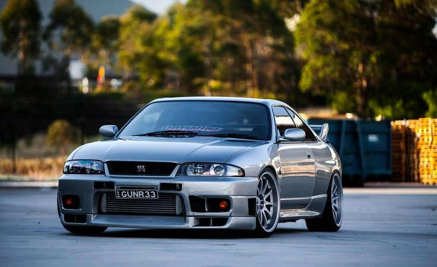The E-BCNR33 (R33) was developed even as the non GT-R R33 models went on sale in August 1993 (with a prototype being shown at the 1993 Tokyo Motor Show) for release in 1995 as a successor to the R32 model. The engine in the R33 was nearly identical to the R32. It used the same turbochargers and the same specification for the manual gearbox, although the syncros were stronger. The engine corrected the R32's weak oil pump drive collar, which tended to fail in higher power applications, by using a wider collar (also fixed in spec 2 R32's prior to R33 release). The base model of the R33 GT-R weighs 1,540 kg (3,395 lb). The R33 GT-R went on sale on 6 January 1995 with the base model GT-R and the V·Spec model. The V·Spec model weighed in 10 kg (22 lb) heavier, and had sportier suspension resulting in lower ground clearance. The V·Spec also featured the newer ATTESA E-TS Pro all wheel drive system, which included an Active Limited Slip differential. At the same time as the introduction of the R33 GT-R and GT-R V·Spec, Nissan introduced the R33 GT-R V·Spec N1 model. Changes made to the R33 N1 are similar to those in the R32 N1. The car was made lighter by removing the ABS, air conditioning, sound system, rear wiper, and boot carpet. The R33 GT-R V·Spec N1 received the slightly revised R33 N1 engine. The R33 ended production on 9 November 1998. The last R33 GT-R produced was a V-Spec in GV1 finished in Black Pearl colour. Before the official release of the R33, Nissan recorded a lap time for the R33 GT-R at the Nürburgring Nordschleife, driven by Dirk Schoysman, car set a lap time of 7:59.887 minutes, became the first production vehicle to break into the sub 8 minute mark. Also the, fastest production vehicle around the track. In 1999, the record was broken by a Skyline GT-R R34. In 1995, Best Motoring conducted a test of the GT-R R33 at the Nürburgring Nordschleife. Driven by Motoharu Kurosawa, the car set a 8:01.72 minute lap time around the track.
Fifth generation (1999–2002)
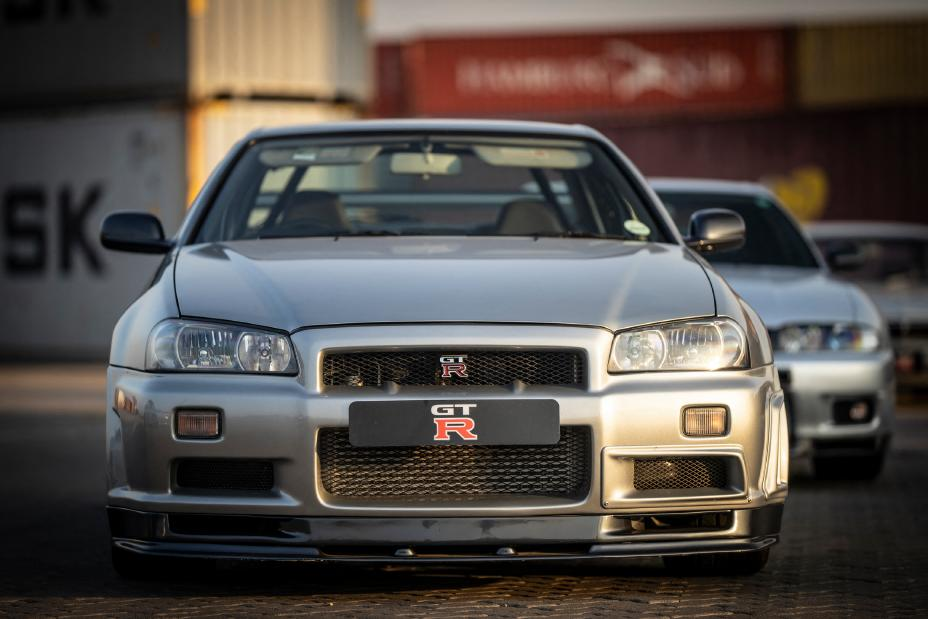 The GF-BNR34 (R34) Skyline GT-R, GT-R V·Spec and GT-R V·Spec N1 models were introduced in January 1999. The R34 GT-R was shorter (from front to rear), and the front overhang was reduced as compared to its predecessor. The valve covers were painted glossy red (colour code Cherry Red Effect Z24 or X1020)[citation needed], as opposed to black in previous models. A new feature on the R34 GT-R is a 5.8" LCD multifunction display on the centre of the dashboard, which shows seven different live readings of engine and vehicle statistics such as turbocharger pressure (1.2 bar max), oil and water temperature, among others. The GT-R V·Spec model added two extra features to the display: intake and exhaust gas temperatures. Nismo Multi-function Displays (MFD) could be bought at an extra cost, they included a lap timer, G-Force meter and an increase in boost pressure measurement to 2 bar. The R34 GT-R was made shorter in response to customer concerns who thought the R33 was too bulky. Like the R33, the new R34 GT-R V·Spec (Victory Specification) models come equipped with the ATTESA E-TS Pro system and an Active LSD at the rear, while standard GT-R models come with the non-Pro system and a conventional mechanical differential. The V·Spec model also had firmer suspension and lower ground clearance, thanks to front and side splitters, as well as a rear carbon fibre air diffuser, designed to keep air flowing smoothly under the car. At the time of the R34's introduction, like the R32 and R33, Nissan introduced an R34 V·Spec N1 model. The R34 V·Spec N1 was equipped similar to the R32 and R33 N1 models – a homologation special. It was sold without air conditioning, audio equipment, rear wiper, or boot lining, but ABS remained. The new R34 N1 was also given the new R34 N1 engine. Only 38 known R34 V·Spec N1 models were produced from the factory, 12 of which Nismo used for Super Taikyu racing. The rest were sold to various customers, mostly racing teams and tuning garages.[citation needed] The V·Spec version was also imported into the UK with a number of modifications carried out on these 80 cars. These included 3 additional oil coolers, revised ECU map, full Connolly leather interior, underbody diffusers, stiffer suspension, active rear limited slip differential, extra display feature on the in car display. In additional to the UK, 10 were sold to Hong Kong and Singapore, and 5 to New Zealand although with different changes for their respective markets. In October 2000, Nissan introduced the V·Spec II, replacing the V·Spec. The V·Spec II has increased stiffness in the suspension (even stiffer than the original V·Spec) and had larger rear brake rotors. It also comes equipped with a carbon fibre bonnet equipped with a NACA duct, which is lighter than the aluminium that all other GT-R bonnets are made from. Also different on the V·Spec II was an iridium centre console and aluminium pedals. The seats were upholstered with black cloth rather than the grey cloth used on previous R34 GT-R models, and the amber turn lenses were replaced with white versions. With the exception of the carbon fibre bonnet, the standard trim level GT-R also received these updates. A total of 18 V·Spec II N1 were built. A total of 1855[61] V·Spec II were built for Japan, with an additional 2 being sold for the New Zealand market. The V·Spec N1 was replaced with the V·Spec II N1. The same changes applied to the V·Spec N1 were applied to the V·Spec II N1, with the exception of the V·Spec II carbon bonnet which was now unpainted. In May 2001, the M·Spec was introduced. It was based on the V-Spec II, but had special "Ripple control" dampers, revised suspension set up, stiffer rear sway bar and a leather interior with heated front seats. The 'M' on the M·Spec stood for Mizuno who is the chief engineer of Nissan. The only other change was the removal of the carbon fibre bonnet which was replaced with the standard aluminium bonnet. In February 2002, Nissan launched a final production model of the R34 GT-R called the Skyline GT-R V·Spec II Nür and the Skyline GT-R M·Spec Nür, which were based on the V-Spec II N1. The Nür was named after the famous German Nürburgring racetrack, where the Skyline was developed. In total, 1,003 units of the R34 GT-R Nür were produced. 718 were V·Spec II Nürs and 285 were M·Spec Nürs. The Nür model featured an improved RB26DETT based on the N1 racing engine. The standard turbochargers were upgraded to larger versions with a slight increase in boost and the ceramic blades were replaced with steel versions. This has increased lag, but the turbo's durability was improved while being able to handle a bigger boost increase. The V·Spec II Nür is based on the regular V·Spec II model, and the M·Spec Nür was based on the regular M·Spec model. Other than the addition of the Nür engine, the Nür models also included a different colour of stitching on the interior trim, as well as a speedometer reading up to 300 km/h (186 mph), gold valve covers instead of red and a gold VIN plate instead of silver. Due to Japanese car industry norms at the time, the car was advertised as having 206 kW (280 PS; 276 hp) but it actually had over 246 kW (334 PS; 330 hp) when it left the factory. In 1999, during Nissan's testing session at the Nürburgring Nordscheleife. The car set a unofficial lap time of 7:52 minutes around the track, driven by Nissan's test driver Kazuo Shimizu. The car broke the Skyline GT-R R33's record, which was the fastest production vehicle around the track.
Nissan Gtr
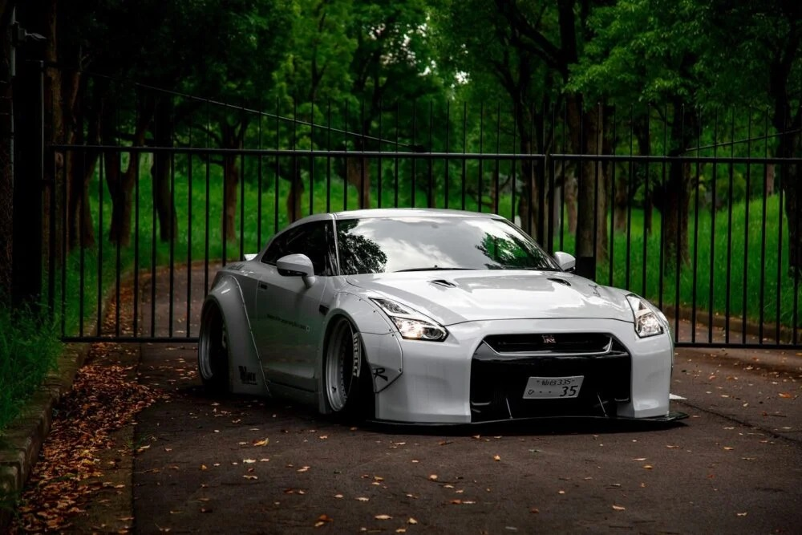 The Nissan GT-R (Gran Turismo–Racing; model code: R35; Japanese: 日産・GT-R; Nissan GT-R) is a car built by Japanese marque Nissan since 2007. It has a 2+2 seating layout and is considered both a sports car and a grand tourer. The engine is front-mid mounted and drives all four wheels. It succeeds the Nissan Skyline GT-R, a faster variant of the Nissan Skyline. Although this model was the sixth-generation to bear the GT-R name, it is no longer part of the Skyline line-up. The car is built on the PM platform, derived from the FM platform used in the Skyline and Nissan Z models. Production is conducted in a shared production line at Nissan's Tochigi plant in Japan. As per Nissan's intention of creating a world beating sports car, the GT-R brand was revived as part of the Nissan Revival Plan. Overall development began in 2000, following seven years of development and testing, including the introduction of two concept models in 2001 and 2005. The production version of the GT-R was unveiled at the 2007 Tokyo Motor Show. The GT-R is a brand-new car built on the PM platform, and featured innovative concepts and technologies, such as advanced aerodynamics, the VR38DETT engine, an active suspension system and the ATTESA E-TS Pro all-wheel-drive system, making it the first ever rear mounted independent transaxle all-wheel-drive vehicle. It is one of the first production cars to feature launch control and a dual-clutch transmission as well. The overall body is made out of steel, aluminium and carbon-fibre. In 2009 it set a record for the fastest accelerating 4-seater production car. The GT-R is offered worldwide, unlike its predecessors which were sold in a limited number of markets. It received various facelifts and updates to be up to date with the competition, and several special editions were also offered during its prolonged production span. The car is used in motorsports, notably winning championships in the FIA GT1 World Championship, Super GT and in various GT3 racing series, including the GT World Challenge. It is well received among enthusiasts and automotive publications as well, British motor magazine Top Gear named it as "one of the most incredible cars of any kind ever built", due its exceptional performance and practicality given at an affordable price. Despite being one of the fastest production cars, it has won numerous notable accolades such as the World Performance Car of The Year among many others. Sales in the Australian market were ceased due to new side impact regulations. In the European market, including the United Kingdom were similarly suspended, due to newly implemented noise regulations. Currently, the car is primarily available in North America, Japan, and some markets.
Go top
Powertrain
The GT-R of the 1990s included a 2.6 L straight six-cylinder twin-turbo engine producing 206 kW (280 PS; 276 hp). The standard turbochargers were of a hybrid steel/ceramic design allowing them to spool up faster due to the light nature of the ceramic exhaust wheel.
The drive train delivered power to all four wheels using an electronically controlled all-wheel-drive system Nissan called the ATTESA E-TS. This system used two accelerometers mounted under the center console, which fed lateral and longitudinal inputs to the ECU. The ECU then controlled power delivery to the front wheels via an electronic torque split converter. In 1995, the ATTESA E-TS Pro was introduced as an option for R33 GT-R customers, and came as standard equipment in GT-R V•Spec models. It was later standard equipment in all GT-R models for the R34 Skyline GT-R. The ATTESA E-TS Pro added a hydraulic Active Limited Slip Differential, which was controlled by the onboard ATTESA computer. This was only for the rear differential, as the front differential remained as a mechanical open differential. Although it is not related to the all wheel drive system, it uses much of the same sensors, and the same computer. The R32 could be switched from AWD to RWD by removing the 4WD fuse, but R33 and R34 models had to have the front tailshaft removed, or the centre diff can be depressurised for 'towing mode' as specified in the owners manual.
The car also had computer-controlled all wheel steering system referred to as HICAS. The HICAS system activated when the vehicle exceeded 80 km/h (50 mph) and controlled the steering of the rear wheels in the same direction as the front to improve turn in on entry to corners. This feature is often seen as more of a hindrance than help in race applications.[citation needed] The system tends to favor less experienced drivers, and can make the rear suspension unstable during high speed cornering.
While the published figures from Nissan were as quoted above, tests showed the car had a factory power output of closer to 327 hp (332 PS; 244 kW) at the flywheel. The lower published figure was Nissan's response to the need to abide by a gentleman's agreement between the Japanese auto manufacturers not to introduce a car to the public exceeding 206 kW (280 PS; 276 hp) of power output.
Motor Sport
The GT-R's history of racetrack dominance began with its 50 victories scored from 1968 to 1972, including 49 consecutive wins in the Japanese race circuit. Nissan pulled out of racing shortly after the introduction of the KPGC110 due to the 1973 oil crisis. 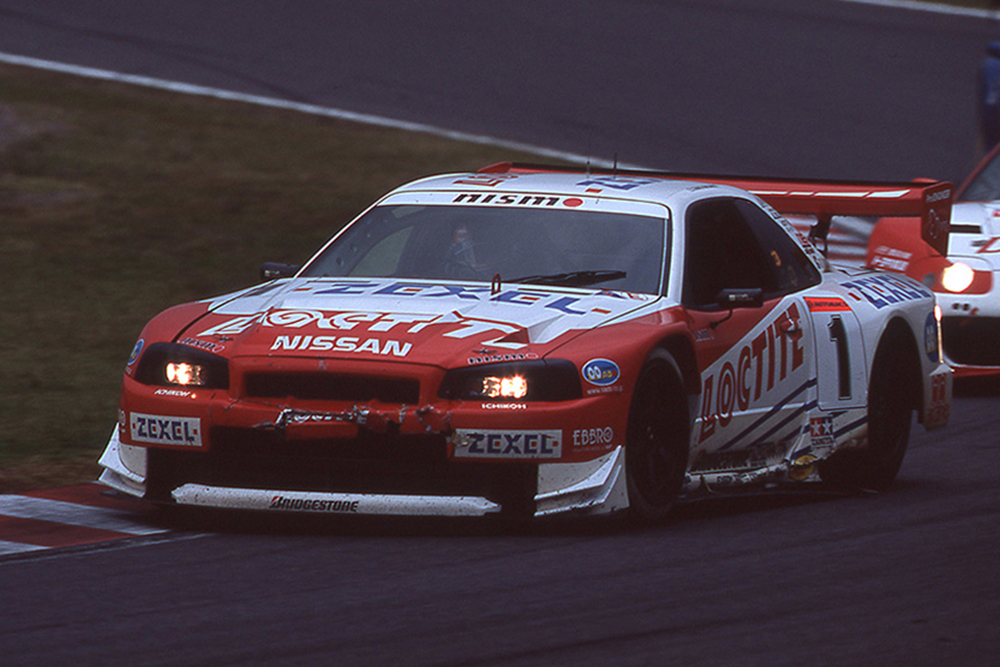 The Skyline GT-R later earned the nickname "Godzilla", as a play on its "monster" track performance and country of origin. The R32 GT-R dominated the Japanese Touring Car Championship, won all 29 races it entered in the series, as well as taking the series title every year from 1989 to 1993. It took 50 races from 50 starts from 1991 to 1997 (latterly R33) in the N1 Super Taikyu. The GT-R's success sounded the death knell of Group A Touring Car racing; with the formula being scrapped soon after. JTCC was similarly dominated by the R32 GT-R, and splintered soon after, leading to the switch to the Supertouring category and also indirectly to the GT500 category of today. The GT-R's success in motor racing was formidable, particularly in the annual 1,000 km (620 miles) race at the Mount Panorama circuit in Bathurst, Australia, where the winner in 1991 and 1992 was a GT-R (despite receiving additional 140 kg (309 lb) in weight penalties and a turbo pressure relief valve in 1992, and crashing). It took the overall win of the 1991 Spa 24 Hours, after getting the pole position and fastest lap time, ahead of the Porsche 911 and BMW M3 Evolution.[81] It remained dominant in the Japanese GT series for many years. The Skyline GT-R was retired from the JGTC series (later changed Super GT Series) in 2004. Its successor, the Nissan GT-R, competed and dominated the 2008 Super GT season, winning the GT500 (see details below).
No other GT-R race victories escaped controversy.[citation needed] At the 1990 Macau Grand Prix Guia touring car race, the factory-backed R32, driven by Masahiro Hasemi, led the race from start to finish. The following year, officials forced the car to carry a weight penalty of 140 kg (309 lb).[citation needed] That year, it was also up against the more competitive DTM BMW M3 and Mercedes-Benz 190E 2.5–16 Evolution II. A disgruntled Hasemi took fourth place. For the following and final year, the weight penalty was reduced, and works-backed Hasemi returned with another privateer R32. The privateer crashed, and Hasemi retired with engine failure.
In the UK, Andy Middlehurst took the Nissan Skyline GT-R (R32) to two consecutive championship wins in the National Saloon Car Cup. Other championship titles include the 1991 Australian Touring Car Championship (Jim Richards), the 1991 Australian Endurance Championship (Mark Gibbs & Rowan Onslow), the 1991 Australian Manufacturers' Championship, the 1992 Australian Touring Car Championship (Mark Skaife) and the 1992 Spanish Touring Car Championship.
Janspeed provided three cars to race in Europe. One car to run for Andy Middlehurst in the UK in the National Touring Car Series. In 1990 they entered three cars in the SPA-Francorchamps 24 hours. They managed a tremendous finish of one, two and three in class. Three cars were entered to run in the SPA 24 hours in which it finished first and second in its class (Group N) in 1991. A GT-R Group A car also took first overall. In 1992 they finished second in Group N with the Group A entry retiring due to a pit fire.
Janspeed also ran a GT-R in the Spanish Touring Car Championship (CET). This car won the championship driven by Luis Pérez-Sala.[82]
Akira Kameyama has taken the GT-R to the Pikes Peak International Hillclimb race on three occasion winning in each Open Class for production cars he entered, one in 1993 with the R32,[83] another in 1996 with the R33[84] and again in 1998.[85] For the following year, Rhys Millen took an R33 Skyline GT-R to win the High-Performance Showroom Stock category.
The GT-R debuted in the US at 1994 Rolex 24 Hours of Daytona. Nismo entered a sole Group A specification R32 for the GTU category. This car was so fast in the infield section in the first practice that the competition colluded to have restrictors fitted. The team was not allowed to run again until they fitted them. They eventually finished 20th. NISSAN was probably not too upset as they did not import the GT-R model to the USA. However, they did sell the 300ZX and it was one of those that won.
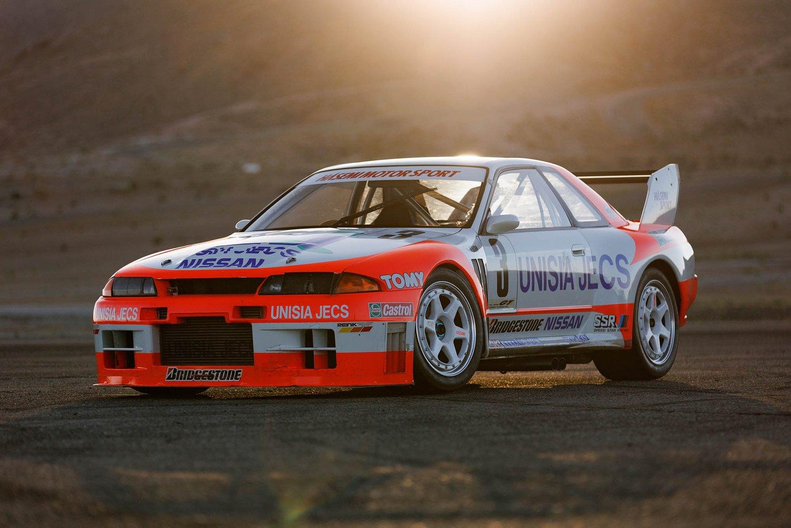
In 1995 Nismo developed the Skyline GT-R for endurance racing with a pair of JGTC specification R33s for the 24 Hours of Le Mans. These were not allowed to run a four-wheel drive. To meet homologation regulations, Nissan had to build at least one street-legal version with four-wheel drive removed. The two racing cars achieved some success at Le Mans, with one car placing tenth overall, and fifth in its GT1 class, class—beaten only by the more developed McLaren F1 GTRs and in overall standings by the GT2 class champion No. 84 Honda NSX entered by Team Kunimitsu. For 1996, the Skyline GT-R LMs returned, this time carrying enlarged RB26DETTs displacing 2.8 litres. Again competing in GT1, they finished 15th overall and 10th in class. However, Nissan chose to abandon their production-based Skyline GT-R LMs in 1997 and instead turn to the purpose-built R390 GT1. In honour of the success of the Skyline at Le Mans, Nissan marketed a limited edition R33 they called the LM Limited, available only in "Champion Blue" (colour code BT2).[86]
In 2006 Automotive Forums.com became the first team to compete with an R34 GT-R in the United States, participating in the Speed World Challenge GT series. Team: Driver and President of Automotive Forums.com Igor Sushko, Crew Chief Sean Morris, Team Manager Victor Reyes, Mechanic Josh Mitchell, and Engineer Merritt Johnson.
In 2007, the Heat Treatments Drag R32 Skyline GT-R driven by Reece McGregor of New Zealand, broke the world record for the fastest AWD over 400 m (1⁄4 mile) with a time of 7.57 seconds at 305.98 km/h (190.13 mph) at the Willowbank Dragway in Australia, a record previously held by the HKS R33 Skyline GT-R with a time of 7.67 seconds.[87][88] Heat Treatments R32 has gone as quick as 7.53@185 mph.[89]
On the same year at TOTB U.K Racing series, Keith Cowie and RB Motorsport's GT-R BNR32 broke the fastest four-wheel drive 0–300 km/h (0–186 mph) record with a time of 12.47 seconds. The previous record holder was another GT-R, a BNR32 from Veilside Japan with 13.72 seconds during the early 90s.[90]
In March 2015, the New Zealand tuning shop, R.I.P.S., set a new AWD 400 m (1⁄4 mile) record with their BNR32 "RIPS MGAWOT III". It ran 7.32 seconds at 308.91 km/h (191.95 mph).[91]
In July 2020, Australian tuning company, Maatuoks Racing's R32 GT-R broke the AWD quarter mile record. Car itself ran the quarter mile in 6.47 at 353.88 km/h (219.94 mph). Also became the fastest GT-R at the quarter mile by beating the ET-S R35 GT-R.[92]
Go top